Gutterworx · West Yorkshire
Recent guttering and roofline work.
Real seamless guttering, full fascia and soffit replacement, drainage and supporting roofline projects completed by Gutterworx.
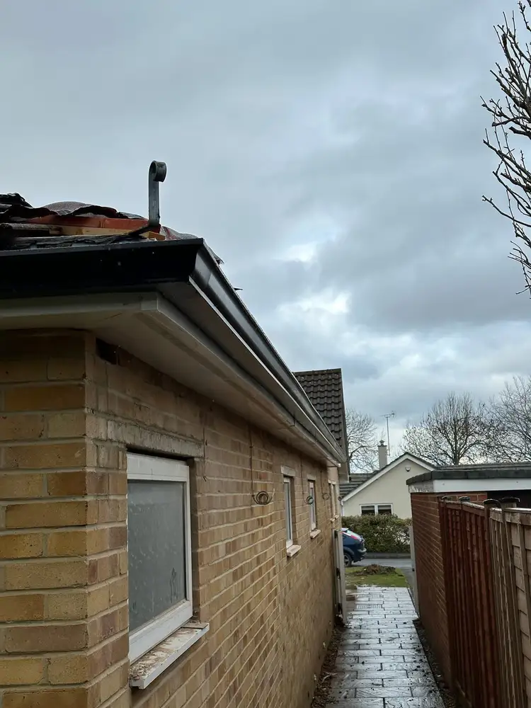
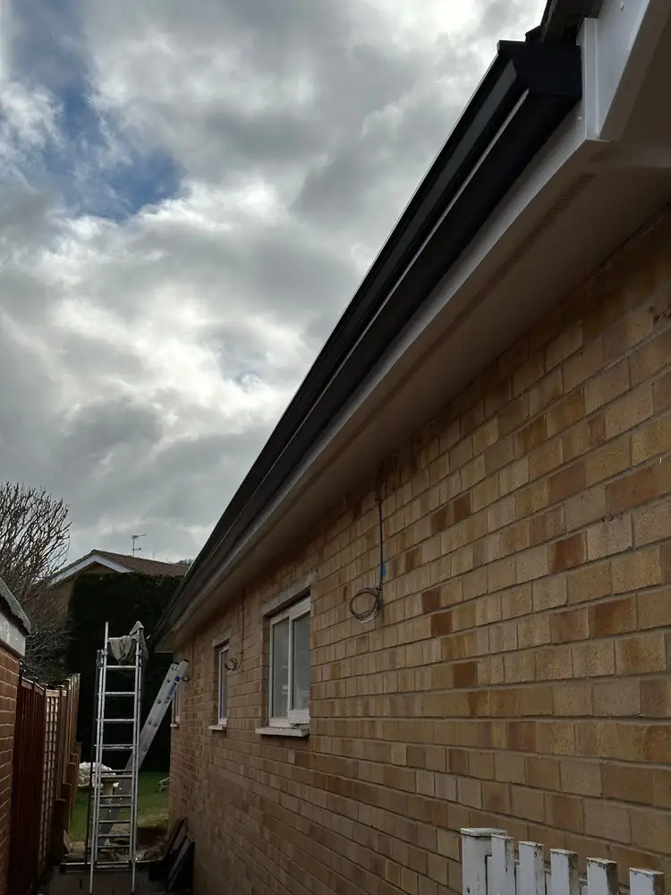

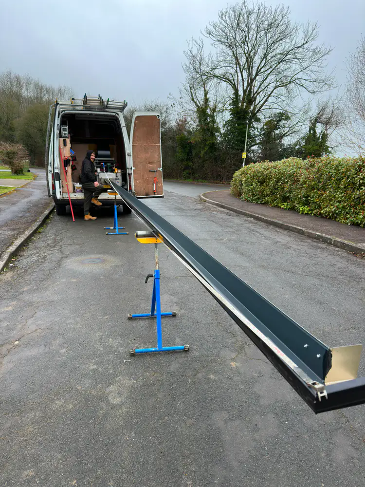
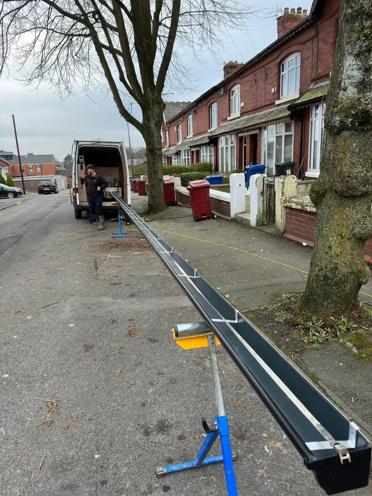
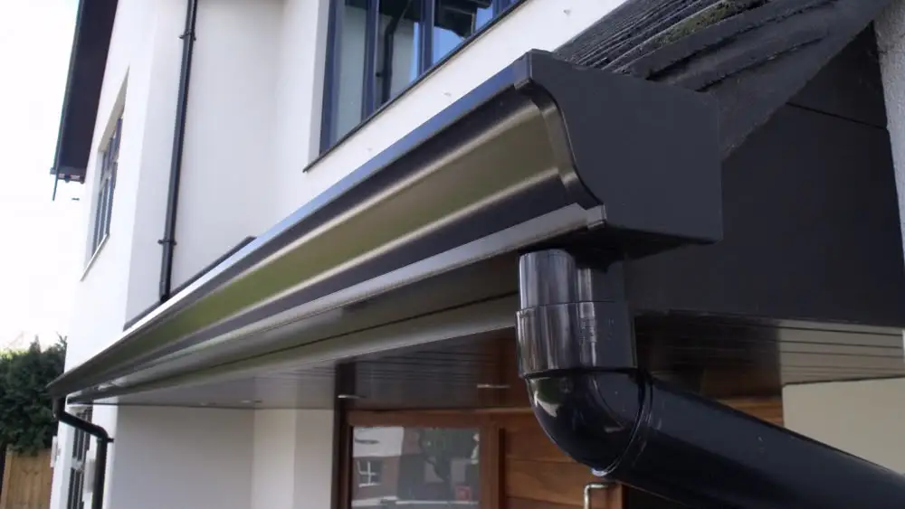
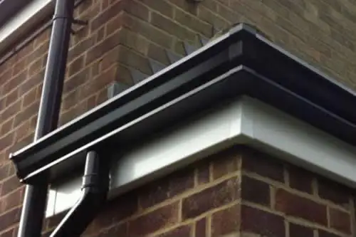
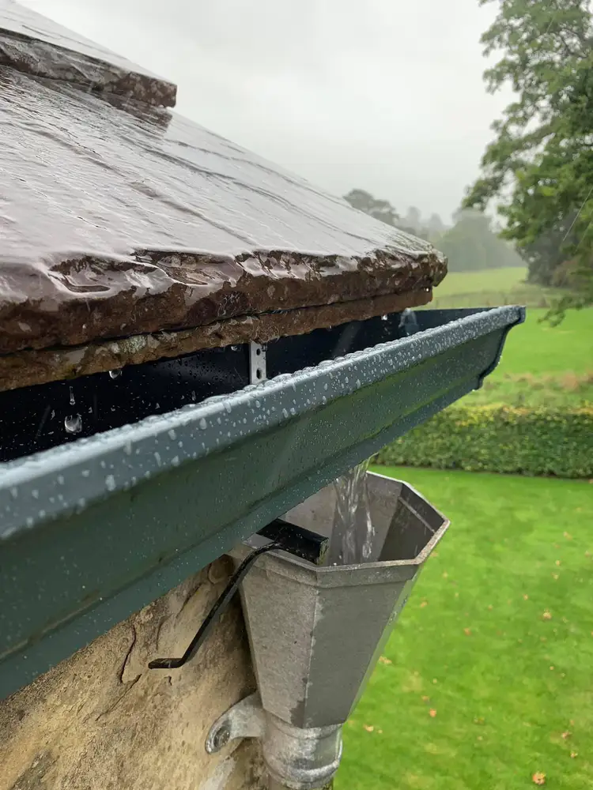

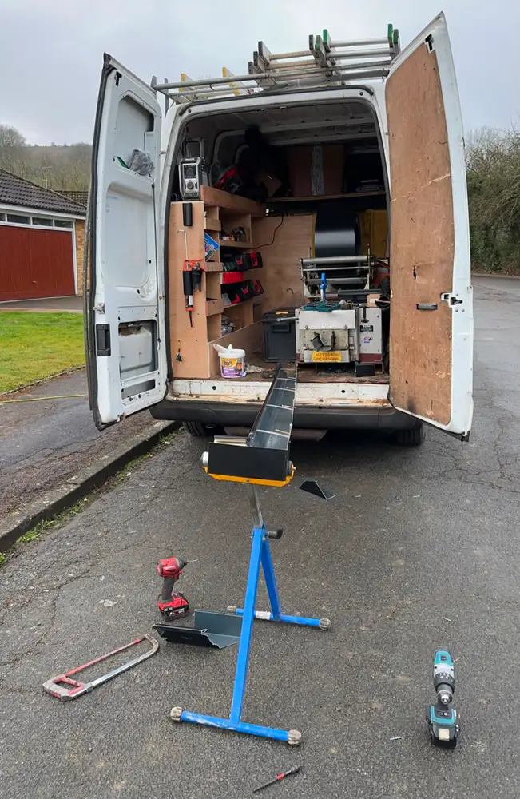
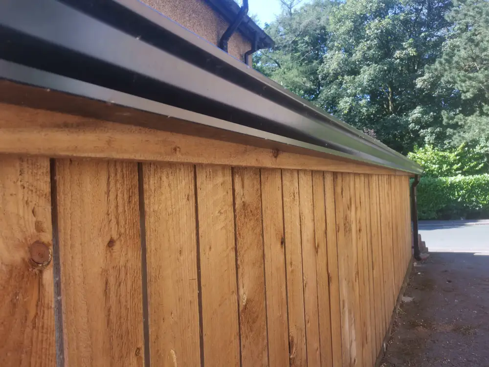
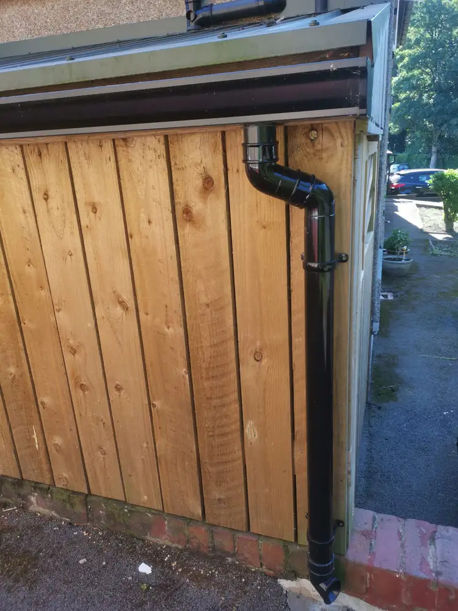
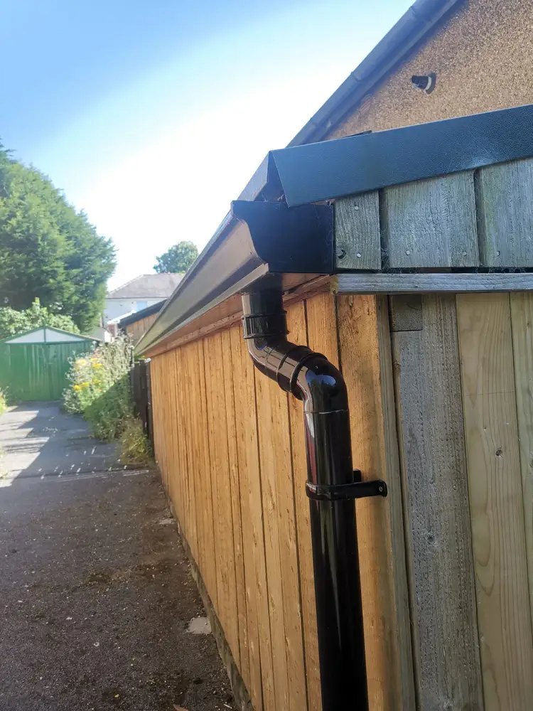
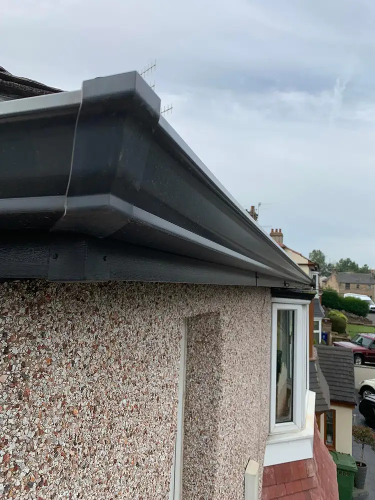
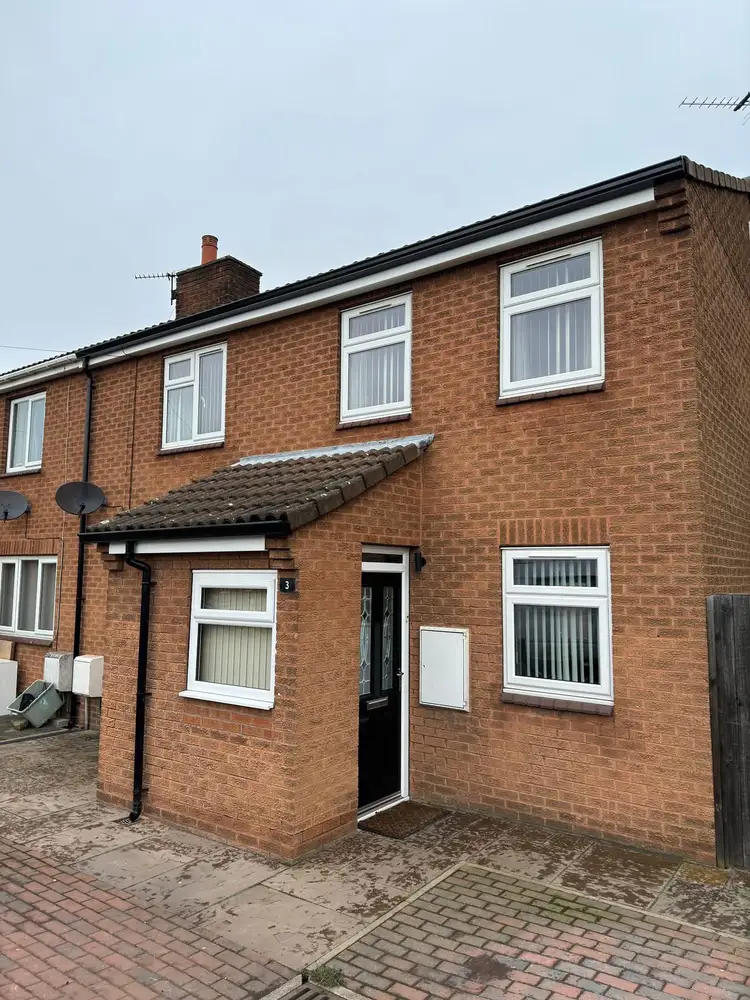
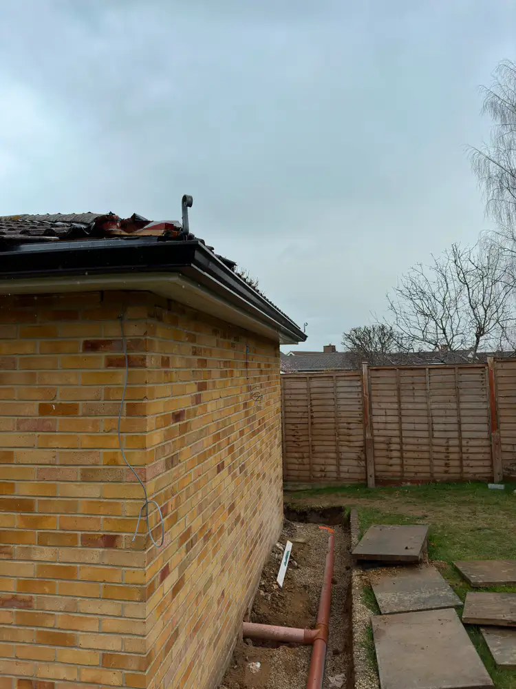